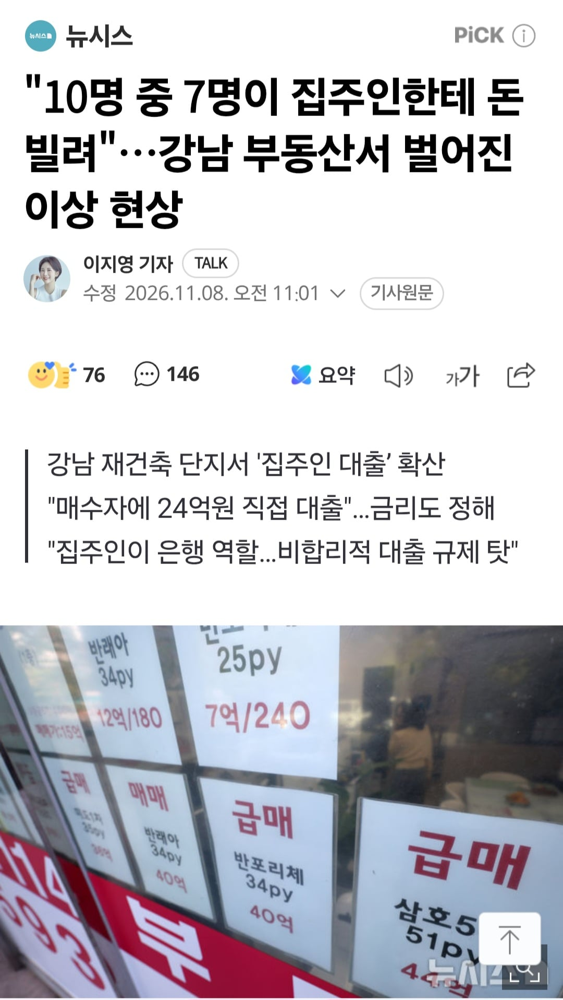

10명 중 7명이 집주인한테 돈 빌려"…강남 부동산서 벌어진 이상 현상
댓글
그러니깐 지금의 문제는 그 편법을 대중들도 법적으로 문제없다는걸 너무 잘알게 된게 이글의 논점이라고...
위법이냐 합법이냐가 논점이 아님
법적으로 문제가 아니였던건 그 기존에서도 마찬가지로 있는데도 잘만 쓰였던거잖씀...
이제와서 처음이 아니라 쓸사람 다 쓰고있던 케이스라는것.
비유하면
0~2000만원 가진 사람은 부자가 아니니까
40억가진 사람도 부자가 아니란거다?
비유자체가 안맞는데요.
하루에 200개씩 한달에 7만개 가깝게 거래되는 시장에서 400개가 대중적이라곤 안하잖아요
엥 이재용은 40조있는데? 그렇다고 40억이 부자가아닌건 아니지
비유 찰떡인뎅? 7만개씩 거래되는거에 400개가 뭐가적어 ㅋㅋㅋ
0~2개가 대중적이라고 말한사람이 그럼 400개도 대중적아니야! 이러는게 걍 웃김 그냥 말꼬리잡고싶다 이거밖에안되니 맥이풀린다
왜 이런말이 나오냐면 나는 건수가 적어도 이미 그 지역에서 종종 그리고 경향적으로 쓰이고 있던거라는 말을 했던거고
대중적인 부분으로 따질려면 전혀 별개의 문제로 봐야하는거니까. 그렇지.
대중적인거 따질거면 그렇다는거지.
누가보면 대중적으로 유명한 거래법인줄 ㄷ
최근에 들어서야 부동산 조금이라도 관심있는 대중들이 알게된 거래법인디...
왜냐하면 말이지…
정상의 비정상화
누가 시범을 보이더라고
읍읍
편법은 못막음 법이 그럼 머리 똑똑한 새끼들이 법망 피해서 컨설팅 다해줌 법안마련되면 벌 새끼들은 다벌고 끝나고 막차 탄 새끼들만 곡소리남ㅋㅋ
77ㅓ억
잡고싶지 못잡겠지
저건진짜 절대못잡을듯
py는 뭐지 평인가
ㅇㅇ
파딱이 알려줬는데 문제라도?ㅋㅋㅋㅋㅋㅋ
리더십이지
대출 안되도 다 방법이 있다 날 보고 따라하라!!
하고 보여주셨으니 모두 따라하는거 ㅋㅋ
심지어 불법 아니다 문제없다! 하고 확인까지 해줌
매튜렁이 직접 패치해놓고 꼬우면 이렇게하면 된다고 공략집냈는데 악용이라니
댓글 ㅇㄱㄸ 개판됐네
저거 한군데만 터져도 연쇄도산 각 아니냐?
너무 위험해 보이는데...
왜 연쇄 도산해? 개인이 개인 빌려준거아님?
글 써놓고 보니 아닌 것 같아. 신경 안써도 될 듯.
오히려 저거 때문에 수도권 외곽이랑 지방 대장아파트들이 더 오르게 되는건 아님?
조심해라 이제 "장기간" 미상환 대출은 규제할지도 모른다
최근에 상황이 좀 업데이트되서
하씨 누구지..
이거나 전세나
그니까
토허제라서 실거주해야되는건데
모자란 돈을 집주인한테 빌려 2년간 실거주하고
실거주 2년을 만족한다음 전세를 주고 그 전세금으로 집주인한테 빌린돈을 갚는다?
이래놓고 토허제 풀리면 또 정상값 찾아간다고 오르겠네 ㅋㅋ
그게 암암리에 문제없이 쓰이고 그 가이드라인은 그대로 있음